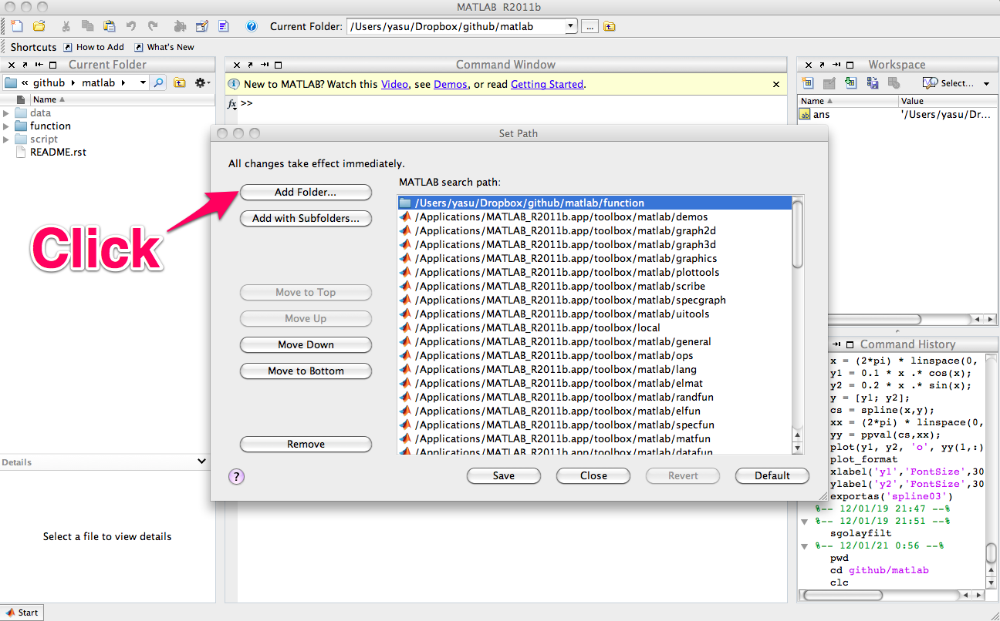

MD Toolbox is a MATLAB toolbox for analysis of molecular dynamics trajectories of biomolecules. It consists of a collection of MATLAB functions which cover the following types of scientific computations:
Download the zip arichive or tarball of the latest codes, or just clone this repository by invokning the following command,
$ git clone https://github.com/ymatsunaga/mdtoolbox.git
For system-wide installation, invoke pathtool commmand in MATLAB and add mdtoolbox/mdtoolbox/ to your MATLAB search path (root privilege required to save the path),
For personal installation, the personal startup file may be found at ~/matlab/startup.m. If one does not exist, create one. Add the following line to startup.m with full path to mdtoolbox m-files
addpath('/path/to/mdtoolbox/mdtoolbox/')
TODO
I/O
| name | description |
|---|---|
| readpdb | read Protein Data Bank (PDB) file |
| writepdb | write Protein Data Bank (PDB) file |
| readamberparm | read amber parameter/topology file |
| readambercrd | read amber coordinate/restart file |
| readamberout | read amber output file |
| readambertrj | read amber ascii-format trajectory file |
| readambertrjbox | read amber ascii-format trajectory file including box size |
| readnetcdf | read amber netcdf file |
| writeambercrd | write amber coordinate/restart file |
| writeambertrj | write amber ascii-format trajectory format file |
| writenetcdf | write amber netcdf file |
| readpsf | read charmm or xplor type Protein Structure File (PSF) |
| readdcd | read xplor or charmm (namd) format dcd file |
| readnamdbin | read namd restart (namdbin) file |
| readnamdout | read namd output file |
| writedcd | write xplor or charmm (namd) format dcd file |
| writenamdbin | write namd restart (namdbin) file |
| readfloattrj | read float trajectory file |
| readgenesisbin | read genesis restart (genesisbin) file |
| readgenesisout | read genesis output file |
| readmarblecrd | read marble coordinate/restart file |
| readmarbletrj | read marble ascii-format trajectory file |
| writemarbletrj | write marble ascii-format trajectory file |
| writexplormap | write xplor density format file |
Geometric calculations (Distances between atoms, angles, dihedrals, fitting of structures, etc)
| name | description |
|---|---|
| calcbond | calculate distance from the Cartesian coordinates of two atoms |
| calcangle | calculate angle from the Cartesian coordinates of three atoms |
| calcdihedral | calculate dihedral angle from the Cartesian coordinates of four atoms |
| calcpairlist | make a pairlist by searching pairs within a cutoff distance |
| calcpairlist_exhaustive | make a pairlist by searching pairs within a cutoff distance |
| searchrange | finds all the atoms within cutoff distance from given atoms |
| searchrange_exhaustive | finds all the atoms within cutoff distance from given atoms |
| superimpose | least-squares fitting of structures by Kabsch’s method |
| meanstructure | calculate average structure by iterative superimposing |
| decenter | remove the center of mass from coordinates or velocities |
| orient | orient molecule using the principal axes of inertia |
Anisotropic Network Model
| name | description |
|---|---|
| anm | calculate normal modes and anisotropic fluctuations by using Anisotropic Network Model. |
| anmsparse | calculate normal modes of ANM using sparse-matrix for reducing memory size |
| anmsym | calculate normal modes of ANM for molecule with circular symmetry using symmetric coordinates |
| transformframe | transform the normal modes from the Eckart frame to a non-Eckart frame |
Statistics (WHAM, MBAR, clustering, etc)
| name | description |
|---|---|
| wham | Weighted Histogram Analysis method (WHAM) |
| ptwham | Parallel tempering WHAM (PTWHAM) |
| mbar | multi-state Bennett Acceptrance Ratio Method (MBAR) |
| calcpmf | calculate 1D potential of mean force from the scattered 1D-data (using kernel density estimator) |
| calcpmf2d | calculate 2D potential of mean force from the scattered 2D-data (using kernel density estimator) |
| calchistpmf | calculate 1D potential of mean force from the scattered 1D-data (using histogram) |
| calchistpmf2d | calculate 2D potential of mean force from the scattered 2D-data (using histogram) |
| calcpca | peform principal component analysis |
| clusteringbyinformation | clustering samples according to an information-based criterion |
| clusteringbykcenter | clustering by K-center |
| clusteringbykmeans | clustering by K-means |
| clusteringbymarkov | clustering by Markov chains |
| calctransitionmatrix | calculate transition probability matrix |
Auxiliary functions (atom selections, index operations, etc)
| name | description |
|---|---|
| selectid | used for atom selection. Finds all the atoms or residues which matches given index |
| selectname | used for atom selection. Finds all the atoms or residues which matches given names |
| selectrange | used for atom selection. Finds all the atoms within cutoff distance from given atoms |
| to3 | convert 1...N atom-index to 1...3N xyz-index |
| substruct | create a subset structure from a structure of arrays of same size |
| formatplot | fomart the handle properties (fonts, lines, etc.) of the current figure |
| exportas | export fig, eps, png, tiff files of the current figure |
| kde2d | fast and accurate state-of-the-art bivariate kernel density estimator |